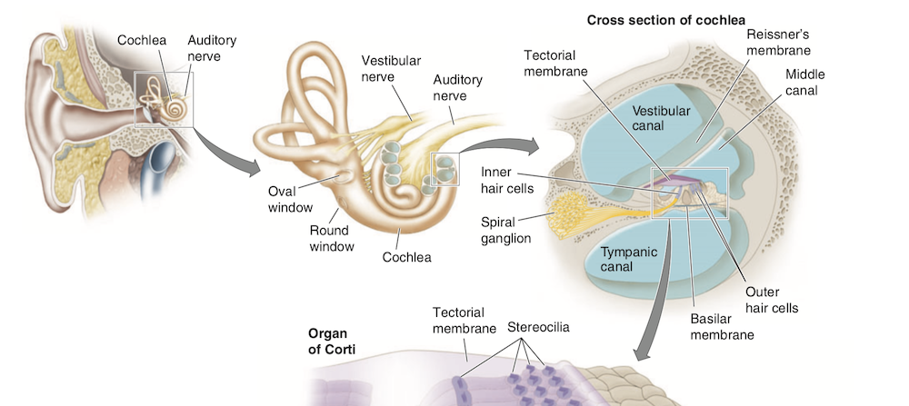
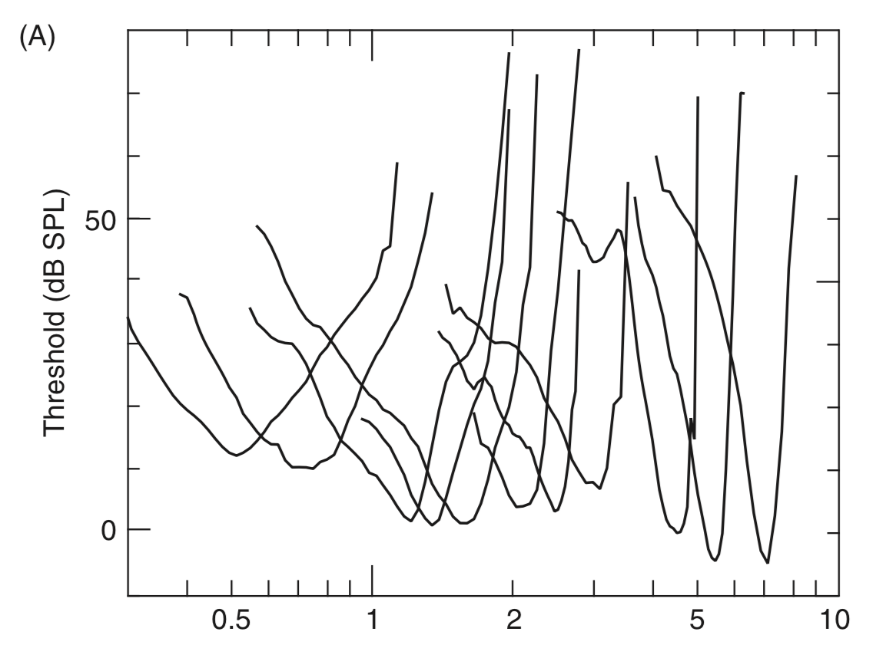
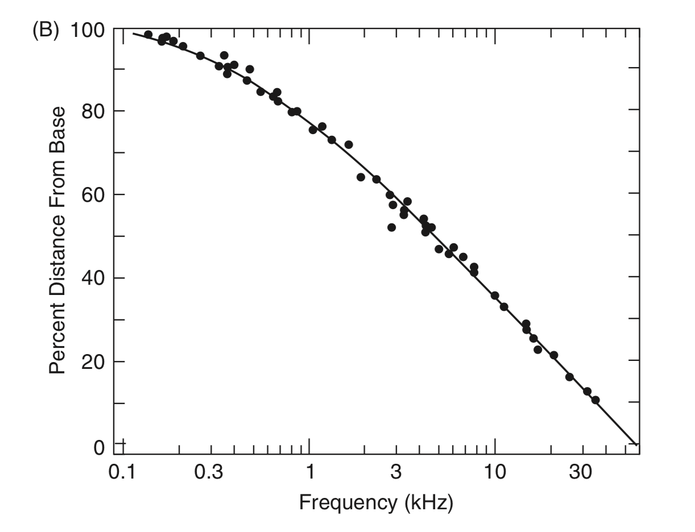
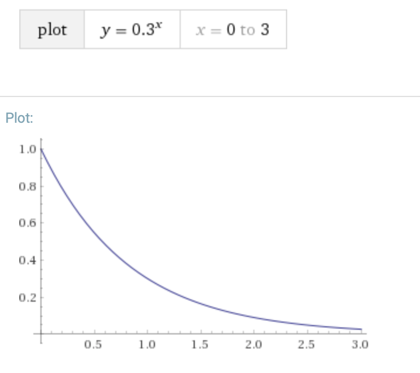
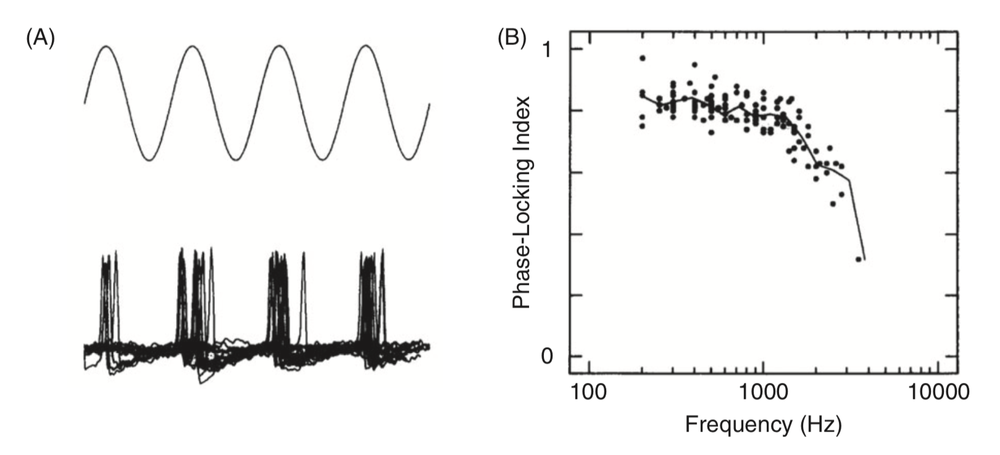
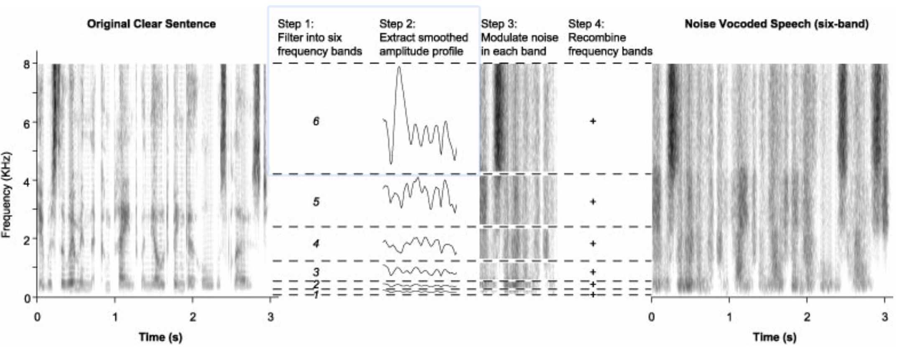
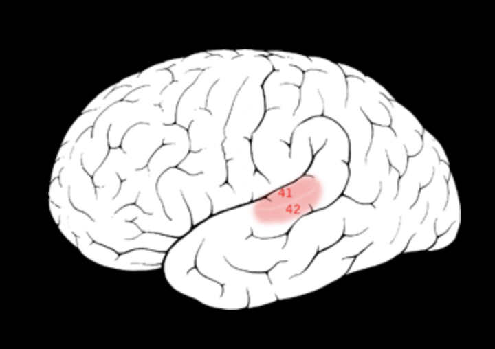
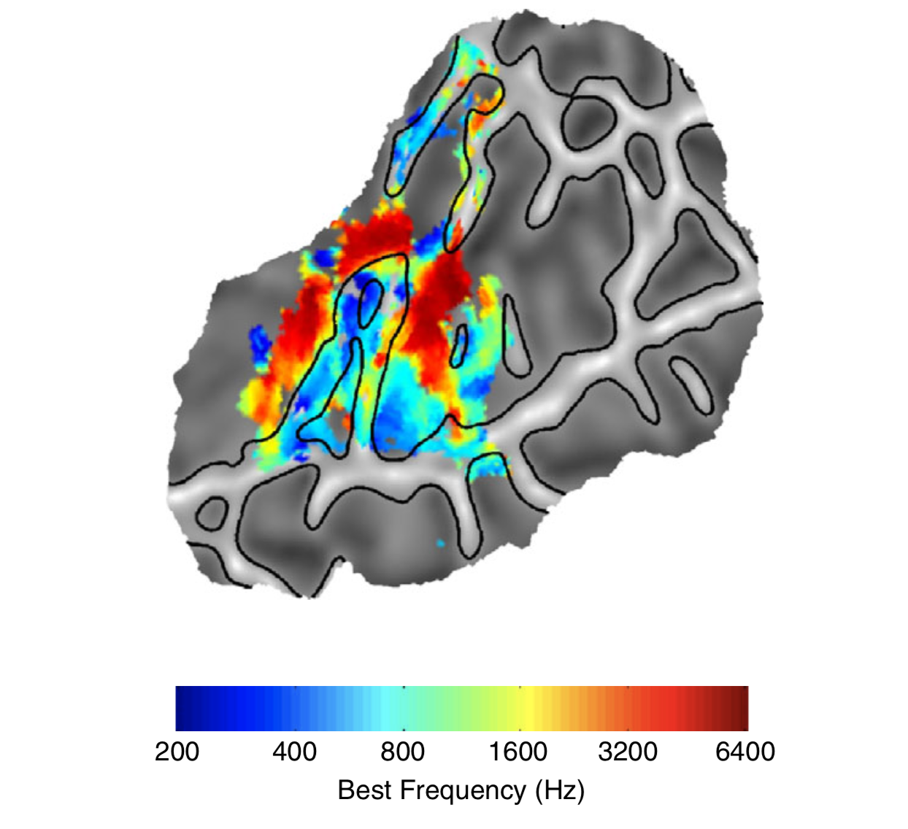

System słuchowy
Krzysztof Basiński
Analogia Bregmana
Wyobraź sobie, że jesteś nad jeziorem i twój kolega chce zagrać z tobą w grę. Gra polega na tym: wykopiecie dwa wąskie “kanały” idące z jeziora w głąb lądu. Wystarczy, żeby kanały miały metr długości, kilkanaście centymetrów szerokości i były od siebie odległe o jakieś pół metra. W połowie każdego z tych kanałów rozciągniecie prostokątny kawałek tkaniny i przymocujecie do ścian waszych kanałów. Gdy na jeziorze powstają fale, wpływają do waszych kanałów i powodują ruch tkaniny.
Analogia Bregmana
Na czym polega gra?
Twoim zadaniem jest patrzeć tylko na ruch tkaniny i odpowiedzieć na serię pytań:
- Ile łódek pływa po jeziorze?
- Gdzie są te łódki?
- Która z łódek ma największy silnik?
- Która jest najbliżej ciebie?
- Czy wieje wiatr?
- Czy ktoś nagle wrzucił do jeziora jakiś duży obiekt?
?
- Rozwiązanie tego problemu wydaje się niemożliwe
- Jest to ścisła analogia ludzkiego systemu słuchowego
System słuchowy
System słuchowy

Ślimak i narząd Cortiego

Charakterystyczne cechy systemu słuchowego
- Selektywność częstotliwości (frequency selectivity)
- Kompresja amplitudy (amplitude compression)
- Phase locking
Selektywność częstotliwości
- Ślimak to zestaw filtrów środkowoprzepustowych (band-pass filters), czułych na wybrane częstotliwości
- Zakresy tych filtrów łącznie dają spektrum słyszanych częstotliwości (20Hz-20 000Hz)
- Zjawisko to nazywa się tonotopią
- Im wyższa częstotliwość, tym szerszy zakres filtrów
- Dlatego gorzej różnicujemy wyższe częstotliwości
Skąd bierze się selektywność częstotliwości?
- Mechanika błony podstawnej (basilar membrane)
- Mechanika komórek rzęsatych
- Kształt ślimaka i mechanika płynu (perilymph, przychłonka)
Selektywność częstotliwości

Tonotopia w ślimaku

Kompresja amplitudy
- Aktywacja w odpowiedzi na cichsze dźwięki jest wyższa niż można by sądzić po aktywacji w odpowiedzi na głośniejsze dźwięki
- Ludzki słuch odbiera olbrzymi zakres dynamiki (co najmniej 100dB czyli 5 rzędów wielkości), jednak odpowiedzi ze ślimaka różnicują głośność tylko na 2 rzędach wielkości
Kompresja amplitudy
- Kompresja pomaga w słyszeniu cichych bodźców, jednocześnie umożliwiając słyszenie zmian w głośności bodźców głośnych
- Kompresja spowodowana jest charakterystyką drgań błon narządu Cortiego i ruchem zewnętrznych komórek rzęsatych
- Często w uszkodzeniu słuchu następuje spadek poziomu kompresji
Krzywa kompresji (v = 0.3 ^ x)

Phase locking
- Peak aktywacji neuronów w nerwie słuchowym pokrywa się z peakiem fali akustycznej
- Jeden z dodatkowych mechanizmów rozpoznawania częstotliwości
- Phase locking jest obecny tylko dla częstotliwości < 4kHz
- Akurat powyżej 4kHz zupełnie tracimy zdolność oceny wysokości dźwięku
Phase locking

Modulacja amplitudy i obwiednie
Co to jest obwiednia (envelope)?
Noise-vocoded speech

Noise-vocoded speech
Kora słuchowa
Wzrastający poziom skomplikowania układu
- 3500 komórek rzęskowych na ucho
- 30000 włókien w nerwie słuchowym
- 60 mln neuronów w pierwszorzędowej korze słuchowej (?)
- 100 mln neuronów w całej korze słuchowej (z jednej strony)
Kora słuchowa

Pierwszorzędowa kora słuchowa
- Zakręt Heschla
- Pola Broadmanna 41 i 42
- Jednostronne uszkodzenie - problemy ze słuchem
- Obustronne uszkodzenie - głuchota korowa
Właściwości pierwszorzędowej kory
- Modulacja spektralna - wykrywanie zmian głośności tylko w obrębie określonych częstotliwości
- Tonotopia
Tonotopia w korze pierwszorzędowej
